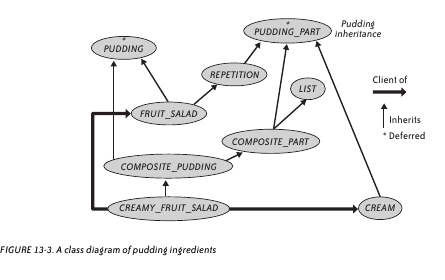
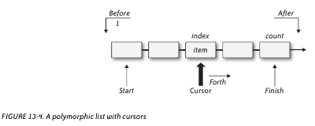
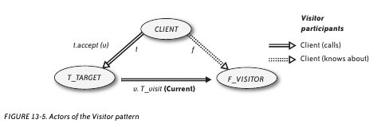
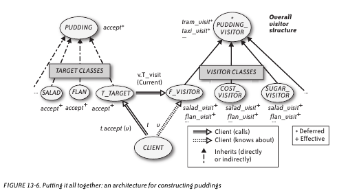

Prabhaker Mateti
Table of Contents
1 Bertrand Meyer on Software Architecture OOP v Func
- Toy Example: Puddings
- pudding = on-top-of topping main-part
- topping = whipped (take pint cream)
- main-part = mixture apple-part orange-part
- apple-part = chopped (take 3 apples)
- orange-part = optional (take 6 oranges)
- combinators: take, whipped, mixture, chopped, optional
1.1 Compute S, the Sugar Content: Functional Prog Solution
- S (on-top-of p1 p2) = S (p1) + S (p2)
- S (whipped p) = S (p)
- S (take q i) = = q * S(i)
- …
1.2 Advantages
- When we define a new pudding/recipe, we can calculate its sugar content with no further work.
- Only if we add new combinators or new ingredients would we need to enhance S.
1.3 Statement of A Financial Contract Problem
- Against the promise to pay USD 2.00 on December 27 (the price of
the option), the holder has the right, on December 4, to choose
between:
- Receiving USD 1.95 on December 29, or
- Having the right, on December 11, to choose between:
- Receiving EUR 2.20 on December 28, or
- Having the right, on December 18, to choose between:
- Receiving GBP 1.20 on December 30, or
- Paying immediately one more EUR and receiving EUR 3.20 on December 29”
- Originally used as an example of how Functional Prog can do things well.
1.4 Functional Programming Version
- Europian Option: european t u = get (truncate t (or u zero))
- H below denotes the expiry date, or horizon
- H (zero) = ∞ , where ∞ is a special value with the expected properties
- H (or c1 c2) = max (H (c1), H (c2))
- H (anytime c) = H (c)
- H (truncate t c) = min (t, H (c))
- H (get c) = H (c)
2 The Pudding Combinators
- All the internal (i.e., non-leaf) nodes are combinators.
- "combinator" a func prog term for functions that construct composite objects.

3 Pudding Class Diagram

4 List from the Eiffel Library

5 Visitor Pattern Explored

6 An Architecture for Constructing Puddings

7 References
- Diomidis Spinellis, Georgios Gousios, "Beautiful Architecture",
O'Reilly Media, Inc., 432 pp, 2009. Highly readable. Find it on
WSU Library Safari.
- The whole book is a Reference.
- Chapter 11 by Blandy on GNU Emacs is Required Reading.
- Chapter 13 by Bertrand Meyer on Software Architecture: Object-Oriented Versus Functional is Required Reading.
- http://www.oodesign.com/factory-method-pattern.html
- http://www.oodesign.com/visitor-pattern.html
- the visitor design pattern at stackoverflow.com
- http://en.wikipedia.org/wiki/Command-query_separation
- http://en.wikipedia.org/wiki/Lamda_expression (correct spelling: lambda)
- Eiffel: deferred class v effecting class
- ./meyer-eiffel-intro.pptx Introduction to Eiffel slides
Copyright © 2013 pmateti@wright.edu • www.wright.edu/~pmateti